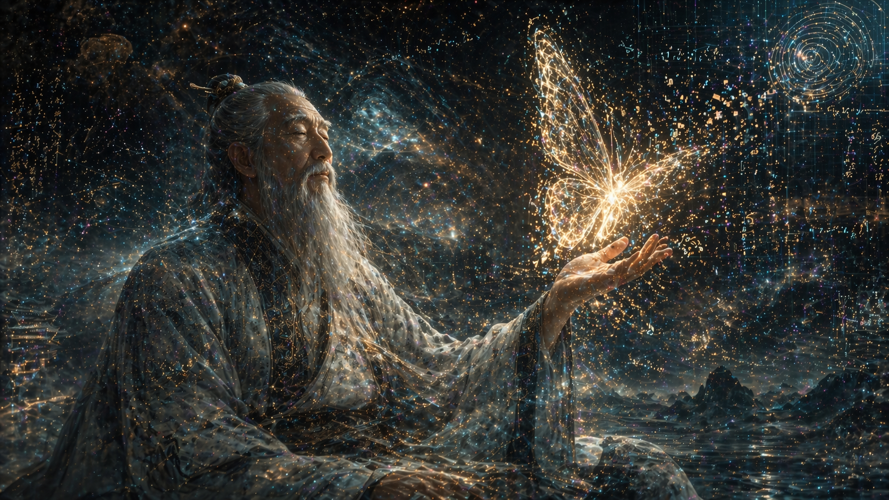

— Zhuangzi (c. 369 BC – c. 286 BC)
Written over two thousand years ago by the ancient Chinese philosopher Zhuangzi, this short passage remains one of the most profound inquiries into human consciousness and the nature of reality. It challenges the very foundation of epistemological certainty: How do we know that what we are experiencing right now is real?
When you dream, the world inside your mind feels as solid, complex, and undeniable as the waking world. You feel the wind, you experience fear and joy, and the laws of physics seem to apply. It is only upon waking that the illusion shatters. But Zhuangzi flips this universal experience on its head—what if the "waking" state is merely a transition into another, more persistent dream?
The Illusion of Form
This paradox cuts deeper than mere solipsism. It introduces the concept of the Transformation of Things (Wù Huà). Zhuangzi argues that the boundary between the self and the other, between the human and the butterfly, is a cognitive illusion. We divide the universe into distinct forms because our brains are wired for survival, not for perceiving absolute truth.
If consciousness can seamlessly inhabit the form of a butterfly in a dream, completely abandoning the memory and identity of the man, then identity itself is fluid. "Zhuangzi" and "Butterfly" are just temporary states of a deeper, undivided universal consciousness.
The Quantum Connection
Remarkably, Zhuangzi's paradox mirrors modern theoretical physics, specifically the Simulation Hypothesis and Quantum Superposition. If reality is rendered by an advanced quantum computer, then our physical bodies are no more "real" than the avatar of a butterfly rendered in a digital dream state.
In quantum mechanics, particles do not have a definite state until they are observed. They exist in a haze of probabilities. Could "waking up" merely be the act of consciousness collapsing the universal wavefunction into a specific human form? Are we, right now, just the universe dreaming about being human?
Perhaps there is no absolute "reality" to wake up to. Whether a man dreaming of a butterfly, or a butterfly dreaming of a man, both are expressions of the same infinite void experiencing itself. The paradox is not a problem to be solved, but a liberation from the illusion of a rigid self.